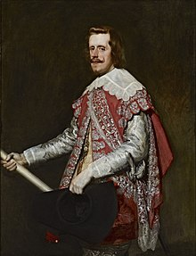
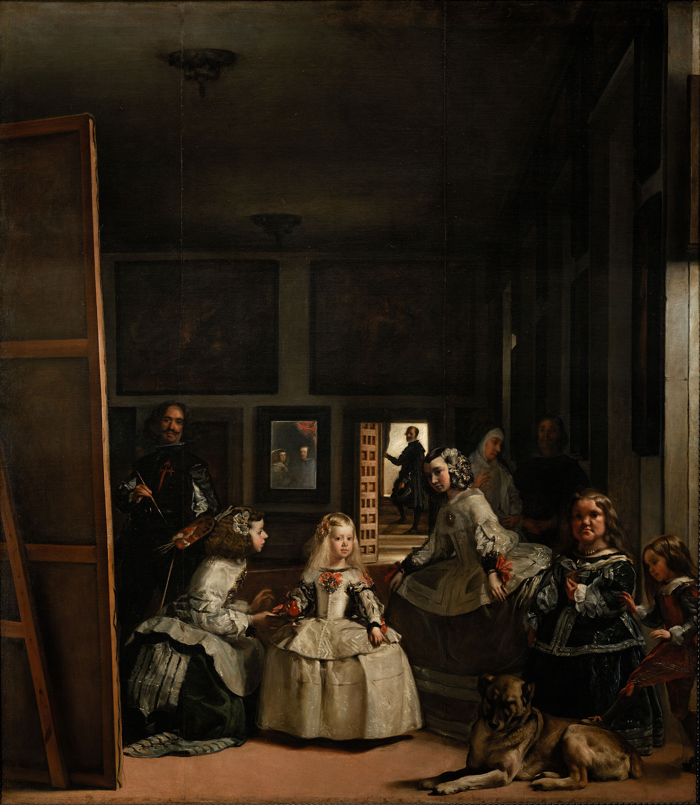

Bienvenido a esta página informativa sobre el rey Felipe IV. En ella podrás conocer la historia de diversas etapas clave de su reinado.
Durante su reinado, el rey Felipe IV fue retratado en numerosas ocasiones. Aquí puedes ver algunos de los cuadros más representativos de su figura, todos ellos realizados por el insigne pintor español Diego de Velázquez.

